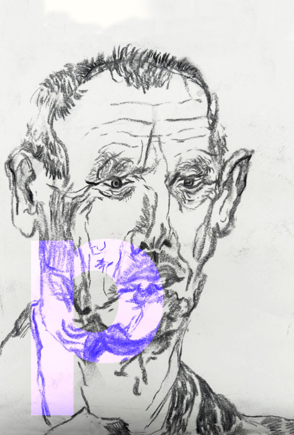

2 Ik hoop dat jij ook zulke duwtjes krijgt
Hier is jouw opa Peter, de vader van Ivo, jouw vader. Nu jij geboren wordt, ben ik 66 jaar. Ik heb grijs haar, ben een beetje kaal en hoor slechter dan toen ik nog jong was.Van mijn eigen opa’s weet ik niet zoveel. Daarom schrijf ik jou, over mijzelf en vroeger, zodat jij wel wat weet over jouw opa.
Ik mag heel graag buiten zijn. Ik ben dan ook geboren in een klein dorp aan het eind van een doodlopende straat, midden in de polder tussen allemaal boerderijen. De boeren hadden toen nog geen tractor. Alles ging met paard en wagen, ze hadden niet meer dan twintig koeien en een paar varkens. Daar speelde ik vaak of hielp ik de boer. Bij die boer haalden we ook de melk. Mijn moeder moest toen nog wel de melk koken want anders werd het slecht.
Mijn vader en zijn vader hadden een boomkwekerij.Toen ik jong was werkte ik daar veel. Later teelde ik er als hob- by-kweker zelf planten. Ivo hielp mij vaak op zaterdagen, net zoals oom Florian, oom Vincent, tante Honorata en, natuurlijk, oma Bärbel.Vraag hen straks maar eens naar ‘Rode bessen in de vrieskou’, dan komen ze vast met allerlei verhalen.
Toen ik vier jaar was, ging ik op houten klompjes naar de kleuterschool. Mijn wereld toen was heel klein. Die was niet groter dan mijn dorp van 2000 mensen. Ik wist niet beter dan dat ik er zou trouwen met mijn verkering van de basisschool en er zou gaan wonen later. Natuurlijk zou ik, net als mijn vader en opa, boomkweker worden. Maar het liep heel anders. Eerst ging ik in Gouda naar de middelbare school, daarna ging ik studeren in Wageningen, op de universiteit.Tijdens mijn studie trok ik de grote wereld in. Ik ging naar de Verenigde Staten, Japan en Polen. In die jaren leerde ik dat de wereld groot is, dat je de meeste plekjes helemaal niet kent en dat er overal aardige mensen zijn.Toen leerde ik ook oma Bärbel kennen en wij werden een stel- letje. Ik ging werken, eerst vijftien jaar bij Philips en toen vijftien jaar bij de Bloemenveilingen.Altijd was ik bezig met slimmere manieren van werken, een beetje zoals jouw vader Ivo dat nu ook doet. Spannende projecten waren mijn specialiteit.
Het mooiste dat ik voor mezelf heb gedaan, en nu nog graag doe, zijn schaatsen, hardlopen en trainer-zijn.Toen ik klein was, schaatste ik bijna elk jaar op de sloten bij mij in het dorp, naast het huis van mijn ouders. Op mijn zestiende werd ik lid van een schaatsclub en daar leerde ik de techniek van schaatsen.We trainden best hard. Ik kon het aardig, al zeg ik het zelf. Ik heb thuis nog een hele doos vol met medailles, bekertjes en diploma’s.Toen ik bijna dertig jaar werd, ben ik gestopt met wedstrijd- schaatsen.Toen werd ik schaatstrainer. Later ben ik ook hardlooptrainer geworden en dat doe ik nog steeds. Lekker buiten en mensen blij maken met sporten. Ik schaats nog steeds heel graag en dat doe ik in Hoorn en hardlopen doe ik ook nog. Ik train nu samen met jouw vader en wij willen volgend jaar tien km hardlopen en daar niet meer dan 50 minuten over doen.
Bijna alles wat ik heb meegemaakt, is heel anders gegaan dan ik verwachtte toen ik klein was. Steeds weer waren er mensen die mij duwtjes gaven naar dingen die nieuw voor me waren en die mij vooruithielpen. En als ik iets leuk vond, dan probeerde ik er wat van te maken. Lieve schat, ik hoop dat jij ook zulke mensen tegenkomt en dat jij ook zulke duwtjes krijgt, soms op onver- wachte momenten. Ik hoop van harte dat jij de vrijheid en tijd vindt om te ontdekken wat je dan van de nieuwe dingen wilt maken.
